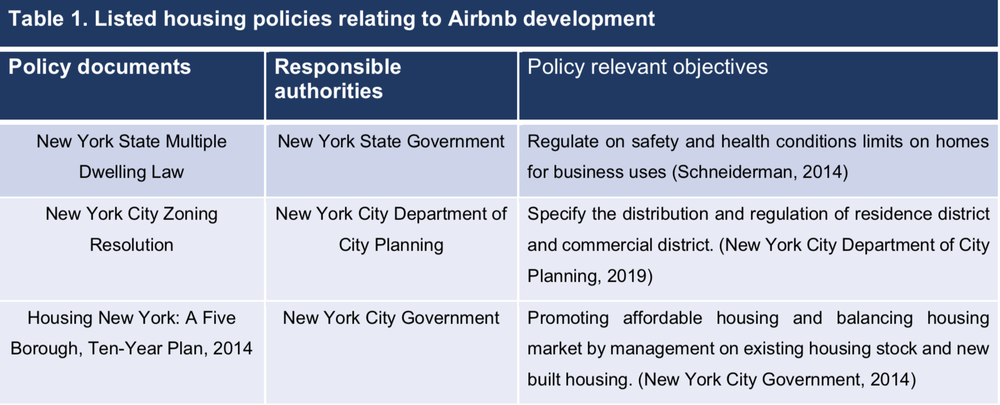
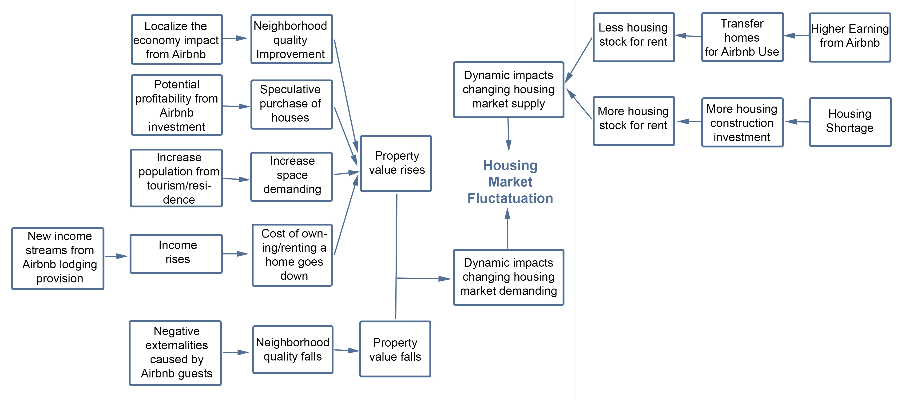

Explore Timeline
The part gives the Economy behind Airbnb. Roughly take 5 minutes to Read. The Chart below shows the basical workflow of the project.
Part I: The development of Airbnb and its performance in New York City
How it works:
Key Facts
Airbnb structures a platform to display short term accommodation provision and relevant leisure activities from local hosts, and guests are able to search and compare their desired lodging with their preferred price, location, dates and housing style. (Airbnb, 2019) In this way, the homeowners are able to further make fully use of their underutilized home space or products.
Peer to peer platform: Airbnb is a significant part of ‘sharing economy’, which bases on Peer to peer(P2P) platform: consumers and producers can directly interact without the intermediation of third party. The platform itself as intermediary can effectively promote higher market flexibility and lower short-rental housing provision risks. Together with the application of the internet tools, the platform further decreases the transaction cost form both sides. (Horton & Zeckhauser, 2016)
The development performance:
Worldwide:
- Airbnb's market offers more than 6 million unique accommodations in nearly 100,000 cities and 191 countries. It also creates unprecedented opportunities to local communities and interests by hosting over 30,000 unique craft events and more than 1,000 markets worldwide. (Airbnb, 2019) - Airbnb has been worth approximately $31 billion valuation since 2016, which becoming the second-most valuable start-up in the U.S. (after Uber) (Thomas, 2017) - Airbnb has made over $1 billion dollars in revenue during the third quarter in 2018. (TechCrunch, 2018) - Airbnb has put forward the plan for IPO in the coming 2019. (Bach,2018)
In New York City context:
- Remarkable annual growth of the numbers of Airbnb accommodation in New York City. - Entire home lodging type present a more rapidly increase during the past five years in New York City. - Private room experience the increase from 2015 to 2018, while there is a slightly reduction from 2018, as well as the sharing room, slower developed since 2016, and decrease from 2018.
Part II: Housing Market Context In NYC
New York City is facing inability to meet the demand of local affordability housing provision, which results from the reduction of purchase power caused by limited income and growing housing price in the market. In relation to Airbnb, it has been discovered that in 2014 there have already been more than 4,600 Airbnb units in New York City being booked for over three months in a year, leading to discussion of its further impacts on the supply of housing stock and housing affordability. (Sheppard and Udell, 2016)
Homeowner occupancy and vacancy:
New York City present a higher percentage of rent activities, comparing to other cities in the United States. Refer to the statistics in 2015, there are only 41% of housing units occupied by owners, while 51% of choose to rent the house, who will also require paying higher property tax as a part of the housing market value. As of 2017, New York City remains a tight housing market, with rental vacancy rate of 3.63% and 11.5% of all rental housing considered overcrowded. (New York City Rent Guidelines Board, 2018) The increasing Airbnb accommodation directly influence the reduction of vacant houses in the market, and the reallocation of housing inventory.
Housing affordability index:
New York City displays the second highest homeownership burden in the country, with over 54% of median annual household income allocated towards housing costs. Despite high income, New Yorkers were faced with very high housing costs as well as property taxes.
Part III: Literature Summary
Policy Intervention

Theoretical Impacts

Part VI: Debate
For a highly constrained and regulated housing market in New York City, how local authorities are able to promote housing market euqilibrium under the dual impact from Airbnb devlopment?
It is a threat:
1. The concentration of Airbnb provision has led to negative externality in local neighbourhood, which result in the reduction of property value. 2. There are so many Airbnb cases existing in the boundary of local laws on housing market and breaking some local regulations on residential and commercial uses buildings, which is harmful for the health of housing market and future city planning. 3. It will last long-term social negative impacts, when more and more owner-occupied houses becoming investment product, it inevitably intensity the gentrificationIt is an opportunity: 1. The development of Airbnb is strikingly promoting the local tourism, which meanwhile raise the demand on local products and services. The upgrade of local facilities result in the rise of property value. 2. The utilization of vacancy houses can reduce the vacancy rate in New York City. 3. It is an opportunity for local residents to earn extra income in a flexible and high-return rate approach. With the growth of income level, the housing affordability can be relieved.